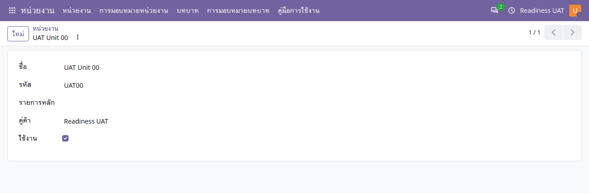

คู่มือการใช้งาน
หน่วยงาน
จัดโครงสร้างองค์กร มอบหมายหน่วยงานให้ผู้ใช้ และประสานสิทธิ์ตามบริษัท
ไม่พบข้อความ ลองใช้คำอื่นหรือล้างคำค้นหา
เริ่มใช้งานและอ่านหน้าจอ
เปิดแอปจากเมนูหลัก แล้วเลือก คู่มือการใช้งาน คู่มือเปิดในแท็บใหม่เพื่อให้ดูพร้อมหน้าทำงานได้ เลือกแอปอื่นจากรายการด้านซ้าย หรือค้นหาคำในคู่มือนี้ และใช้ปุ่มพิมพ์ / บันทึก PDF เมื่อต้องการสำเนา
- ตรวจบริษัทที่มุมขวาบนและหน่วยงานในเอกสารก่อนสร้างหรืออนุมัติ เมนูและปุ่มขึ้นกับสิทธิ์ของบัญชี
- หลังแก้ข้อมูล ให้ใช้ปุ่มบันทึก / ไอคอนบันทึกตามที่แบบฟอร์มแสดง แล้วตรวจสถานะและเลขเอกสารก่อนออกจากหน้า
- ภาพประกอบเป็นข้อมูลจำลอง ชื่อรายการ ภาษา หรือเลขเอกสารอาจต่างจากบัญชีของคุณ ตัวเลขในภาพไม่ใช่ค่าที่ต้องกรอก
- ข้อความผิดเงื่อนไขให้จดเลขเอกสารและข้อความที่แสดง ส่งให้ผู้รับผิดชอบงานตรวจ อย่าส่งรหัสผ่านหรือข้อมูลเข้าสู่ระบบ
- ถ้าคู่มือเปิดแล้วภาพหรือภาษาเก่าค้าง ให้บันทึกงานในหน้าระบบก่อน แล้วรีเฟรชแท็บคู่มือ
งานที่ทำในแอปนี้
ใช้หน่วยงานเป็นขอบเขตข้อมูลร่วมของงบประมาณ จัดซื้อ สัญญา และทรัพย์สิน การเลือกบริษัทและการมีสิทธิ์ในหน่วยงานเป็นคนละเงื่อนไข ต้องตรงกันจึงเปิดเอกสารได้
- กำหนดหน่วยงาน
- มอบหมายผู้ใช้
- กำหนดบทบาท
- ทดลองเข้าถึงข้อมูล
สร้างหรือแก้หน่วยงาน
หน่วยงาน → หน่วยงาน
- เลือกบริษัทที่ต้องการทำงานจากมุมขวาบน แล้วเปิดรายการหน่วยงานและกด ใหม่
- กรอกชื่อ รหัส และบริษัท เลือกหน่วยงานแม่ที่อยู่ในบริษัทเดียวกัน หากเป็นระดับบนสุดให้เว้นหน่วยงานแม่
- เลือกคู่ค้าที่เกี่ยวข้องเมื่อกระบวนงานกำหนด แล้วบันทึก ตรวจชื่อและสายบังคับบัญชาในรายการ
- หากเลิกใช้งาน ให้ตรวจเอกสารและการมอบหมายก่อนปิดการใช้งาน หน่วยงานที่มีประวัติไม่ควรถูกสร้างใหม่เพื่อแทนรหัสเดิม

มอบหมายหน่วยงานให้ผู้ใช้
หน่วยงาน → การมอบหมายหน่วยงาน
- ผู้มีสิทธิ์จัดการเปิดรายการมอบหมาย แล้วเลือกผู้ใช้และหน่วยงาน
- ตรวจว่าผู้ใช้อยู่ในบริษัทของหน่วยงานก่อนบันทึก
- กำหนดรายการเริ่มต้นเมื่อผู้ใช้นั้นต้องเริ่มงานในหน่วยงานนี้ แล้วตรวจว่าข้อมูลที่ใช้เป็นค่าเริ่มต้นถูกต้อง
- ให้ผู้ใช้เปิดเอกสารที่อยู่ในหน่วยงานที่ได้รับมอบหมายเพื่อตรวจผล การมอบหมายหน่วยงานไม่ได้ให้สิทธิ์อนุมัติทุกแอปโดยอัตโนมัติ
บทบาทและระยะเวลามอบหมาย
หน่วยงาน → บทบาท / การมอบหมายบทบาท
- ผู้จัดการบทบาทเลือกบทบาทที่ได้รับอนุญาตให้จัดการและตรวจบริษัทของบทบาท
- ระบุผู้ใช้ หน่วยงาน วันเริ่มต้น วันสิ้นสุด และสถานะเปิดใช้งานในรายการมอบหมาย
- ตรวจสถานะมีผลตามวันใช้งานจริง อย่าใช้เฉพาะช่องเปิดใช้งานเป็นหลักฐานว่าการมอบหมายยังมีผล
- การแก้กลุ่มสิทธิ์ในบทบาทและการมอบอำนาจจัดการบทบาทเป็นงานของผู้มีสิทธิ์เฉพาะ หากเมนูไม่ปรากฏให้ติดต่อผู้ดูแล
เชื่อมกับแผนกและพนักงาน
แผนก HR เชื่อมกับหน่วยงานในบริษัทเดียวกัน พนักงานมีหน่วยงานหลักและอาจมีหน่วยงานเพิ่มเติมตามช่วงเวลา อ่านรายละเอียดใน คู่มือพนักงาน การมอบหมายหน่วยงานของบัญชีผู้ใช้และการสังกัดหน่วยงานของพนักงานเป็นข้อมูลคนละชุด ต้องตรวจให้ตรงวัตถุประสงค์
เมื่อมองไม่เห็นข้อมูล
| อาการ | ตรวจอย่างไร |
|---|---|
| หน่วยงานไม่อยู่ในตัวเลือก | ตรวจบริษัทที่เปิดอยู่ บริษัทของผู้ใช้ และสถานะเปิดใช้งานของหน่วยงาน |
| เปิดเอกสารแล้วแจ้งไม่มีสิทธิ์ | ตรวจการมอบหมายหน่วยงานและสิทธิ์ของแอปนั้นกับผู้ดูแล |
| ไม่พบเมนูบทบาท | เมนูนี้จำกัดตามหน้าที่ผู้จัดการบทบาท การเห็นหน่วยงานไม่ได้หมายความว่าจะเห็นทุกเมนู |
| โครงสร้างบริษัทไม่ตรง | สร้างข้อมูลในบริษัทที่ถูกต้องตั้งแต่ต้น บริษัทของหน่วยงานเดิมถูกป้องกันการแก้หลังสร้าง |
FAQ: การตั้งค่าและเปลี่ยนสกุลเงิน
ใช้ได้กับทุกแอป โดยแยกสกุลเงินบริษัทออกจากสกุลเงินเอกสาร รหัส THB (฿) คือเงินบาท และ USD ($) คือดอลลาร์สหรัฐ การเปลี่ยนภาษาเป็นไทยไม่เปลี่ยนสกุลเงินจริง
1. ต้องการใช้เงินบาททั้งระบบ ต้องตั้งที่ไหน?
ให้ผู้ดูแลที่มีสิทธิ์จัดการบริษัท เลือก การตั้งค่า → บริษัท → เปิดบริษัทที่ต้องการ → ข้อมูลทั่วไป → สกุลเงิน แล้วเลือก THB และบันทึก ควรกำหนดก่อนเริ่มตั้งค่าบัญชีและสร้างเอกสารธุรกิจ ตรวจประเทศและผังบัญชีให้ตรงกับการใช้งานด้วย ค่าเริ่มต้น THB ของชุด ERP นี้ใช้กับบริษัทใหม่ โดยบริษัทสาขาอาจรับสกุลเงินจากบริษัทแม่ และการระบุสกุลเงินอื่นอย่างชัดเจนยังมีผล
สกุลเงินบริษัทเป็นค่าหลักของงบประมาณ บัญชี และรายงานหลายประเภท เอกสารซื้อหรือรายจ่ายยังใช้สกุลเงินต่างประเทศได้ตามสิทธิ์และการตั้งค่า จึงไม่ใช่การบังคับให้เอกสารทุกฉบับแสดง ฿
2. ทำไม admin เปลี่ยนสกุลเงินบริษัทไม่ได้?
ถ้ามีข้อความว่า คุณไม่สามารถเปลี่ยนสกุลเงินของบริษัทได้ เนื่องจากมีรายการสมุดรายวันบางรายการอยู่ แสดงว่าระบบพบประวัติรายการบัญชีแล้ว ข้อจำกัดนี้ใช้กับ admin ด้วย และอาจรวมบริษัทแม่/สาขาที่เกี่ยวข้อง การมีเพียงชื่อสมุดรายวันกับการมีรายการบัญชีเป็นคนละเรื่อง อย่าลบรายการบัญชีหรือฝืนแก้ฐานข้อมูลเพื่อปลดล็อก
สำหรับการทดลอง ให้ผู้ดูแลสร้างบริษัททดลองใหม่ ตั้งประเทศและสกุลเงิน THB ก่อนเริ่มงาน เตรียมผังบัญชีและสมุดรายวัน แล้วกำหนดสิทธิ์ผู้ใช้ หน่วยงาน คลัง และข้อมูลพื้นฐานที่แอปนั้นต้องใช้ จากนั้นเลือกบริษัทใหม่ที่มุมขวาบน บริษัทและเอกสาร USD เดิมยังคงเดิม การเพิ่มบริษัทไม่ใช่การแปลงยอดหรือย้ายประวัติเดิม สำหรับการเปลี่ยนระบบใช้งานจริงต้องวางแผนย้ายยอดกับผู้รับผิดชอบบัญชี
3. แอปนี้เลือกหรือเปลี่ยนสกุลเงินตรงไหน?
หน่วยงานและการมอบหมายหน่วยงานไม่มีสกุลเงินของตนเอง ให้เลือกบริษัทที่มุมขวาบน และระบุบริษัทของหน่วยงานให้ถูกต้อง เอกสารงบประมาณและการเงินของหน่วยงานจะใช้กติกาสกุลเงินของบริษัทหรือต้นทางนั้น การแก้ชื่อหน่วยงานไม่เปลี่ยนสกุลเงิน
4. ไม่พบ THB หรือไม่เห็นช่องสกุลเงิน ต้องทำอย่างไร?
ให้ผู้จัดการบัญชีตรวจที่ ออกใบแจ้งหนี้/การบัญชี → การกำหนดค่า → บัญชี → สกุลเงิน ว่า THB และสกุลเงินที่ต้องใช้เปิดใช้งานอยู่ การเปิดใช้หลายสกุลเงินและสิทธิ์ผู้ใช้อาจเป็นเงื่อนไขให้ช่องสกุลเงินปรากฏ ชื่อเมนูอาจต่างตามสิทธิ์และภาษา
ก่อนใช้เงินต่างประเทศ ให้ผู้รับผิดชอบบัญชีกำหนดอัตราแลกเปลี่ยนของบริษัทและวันที่ที่เกี่ยวข้อง ตรวจทิศทางอัตราตามที่หน้าจอแสดง ไม่ถือว่าระบบดึงอัตราให้อัตโนมัติเสมอ หากเอกสารมีอัตราที่ระบบบันทึกไว้แล้ว อัตราใหม่ไม่จำเป็นต้องแก้ยอดประวัติย้อนหลัง
5. บัญชีทดลองไม่เห็นการตั้งค่า ต้องใช้ admin เท่านั้นหรือไม่?
ขึ้นกับสิทธิ์ที่ได้รับ ไม่ใช่ชื่อบัญชี บัญชีทดลองถูกซ่อนแอปและการตั้งค่าระบบโดยตั้งใจ ให้ผู้ดูแลที่มีสิทธิ์บริษัทหรือผู้จัดการบัญชีตั้งค่าที่เกี่ยวข้องให้ ผู้ใช้งานทั่วไปเลือกสกุลเงินได้เฉพาะเอกสารที่ตนมีสิทธิ์และยังแก้ไขได้ ไม่ต้องเพิ่มสิทธิ์ผู้ดูแลระบบเพียงเพื่อเลือกสกุลเงินเอกสาร
6. เลือกบริษัท THB แล้ว ทำไมยังเห็น $?
ตรวจบริษัทที่มุมขวาบนก่อน โดยเลือกบริษัทเดียวเมื่อกำลังตรวจยอด จากนั้นตรวจบริษัทและสกุลเงินในเอกสารจริง เอกสาร USD เดิม ใบสั่งซื้อจากผู้ขายต่างประเทศ หรือข้อตกลงที่เชื่อมเอกสาร USD ยังแสดง $ ได้ตามข้อมูลจริง บันทึกงานก่อนโหลดหน้ารายงานหรือแดชบอร์ดใหม่ การเปลี่ยนบริษัทที่กำลังใช้งานไม่ย้ายบริษัทหรือแปลงเงินของเอกสารเก่า
7. เปลี่ยน USD 100 เป็น THB แล้วถือเป็น 100 บาทเลยหรือไม่?
ไม่ควรถือเช่นนั้น การเปลี่ยนช่องสกุลเงินของร่างเอกสารไม่รับประกันว่าราคาจะถูกแปลงให้ถูกต้องโดยอัตโนมัติ หลังเปลี่ยนต้องตรวจราคาต่อหน่วย จำนวน ส่วนลด ภาษี ยอดรวม และยอดสกุลเงินบริษัทอีกครั้งตามอัตราและวันที่ที่ใช้ ห้ามเปลี่ยนเพียงสัญลักษณ์ $ เป็น ฿ บนรายงาน เพราะจะทำให้เข้าใจยอดเงินจริงผิด
ก่อนยืนยันหรืออนุมัติ ตรวจ บริษัท → สกุลเงินเอกสาร → วันที่และอัตราแลกเปลี่ยน → ยอดต้นทางและยอดสกุลเงินบริษัท หากเอกสารยืนยัน ลงบัญชี หรือเชื่อมรายการปลายทางแล้ว ให้หยุดและใช้กระบวนการแก้ไขของแอปตามสิทธิ์